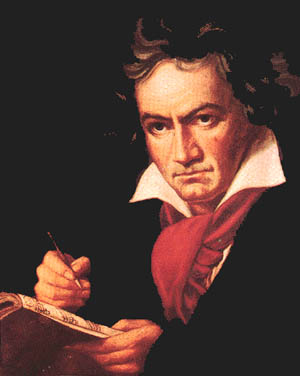

Örömóda
|  |
...Beethoven mikor eldöntötte, hogy a IX. szimfónia fináléját Schiller szavaira írt kórussal szólaltatja meg, még mindig számos problémával kellett megküzdenie a megfelelõ részletek kiválasztását, illetve az emberi hangnak a szimfonikus szerkezetbe való beillesztését illetõen. Elõbbi azt jelentette, hogy a – mai ízlésünk számára túlságosan "szárnyaló" – költeménybõl azokat a strófákat emelje ki, amelyek valóban az öröm csodálatos ajándékát ünneplik; utóbbi azt, hogy a zeneköltõnek gondoskodnia kellett olyan meggyõzõ formai megoldásról, amely elhiteti a hallgatóval az ének felhangzásának dramaturgiai szükségességét. ... Hangversenykalauz |